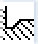
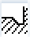
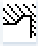
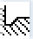
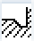
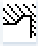

Freistich Gewinde - CYCLE940
Parameter G-Code Programm (Freistich Gewinde) | | Parameter ShopTurn-Programm (Freistich Gewinde) |
|---|
PL | Bearbeitungsebene | | | T | Werkzeugname | |
SC | Sicherheitsabstand | mm | D | Schneidennummer | |
F | Vorschub | * | F | Vorschub | mm/U |
| | | | S / V  | Spindeldrehzahl oder konstante Schnittgeschwindigkeit | U/min
m/min |
Parameter | Beschreibung | Einheit |
|---|
Bearbeitung | | |
Bearbeitungs-
richtung | | |
Lage | Lage der Bearbeitung:        | |
X0 | Bezugspunkt X ∅ | mm |
Z0 | Bezugspunkt Z | mm |
X1 | Freistichtiefe bezogen auf X ∅ (abs) oder Freistichtiefe bezogen auf X (ink) | mm |
Z1 | Aufmaß Z (abs oder ink) | mm |
R1 | Verrundungsradius 1 | mm |
R2 | Verrundungsradius 2 | mm |
α | Eintauchwinkel | Grad |
VX | Planzug ∅ (abs) oder Planzug (ink) - (nur bei ∇∇∇ und ∇ + ∇∇∇) | |
D | maximale Tiefenzustellung – (nur beim ∇ und ∇ + ∇∇∇) | mm |
U oder UX | Schlichtaufmaß in X oder Schlichtaufmaß in X und Z – (nur bei ∇ und ∇ + ∇∇∇) | mm |
UZ | Schlichtaufmaß in Z – (nur bei UZ, ∇ und ∇ + ∇∇∇) | mm |
* Einheit des Vorschubes wie vor Zyklusaufruf programmiert
Siehe auch:
Funktion - CYCLE940
Werkzeug, Korrekturwert, Vorschub und Spindeldrehzahl (T, D, F, S, V)